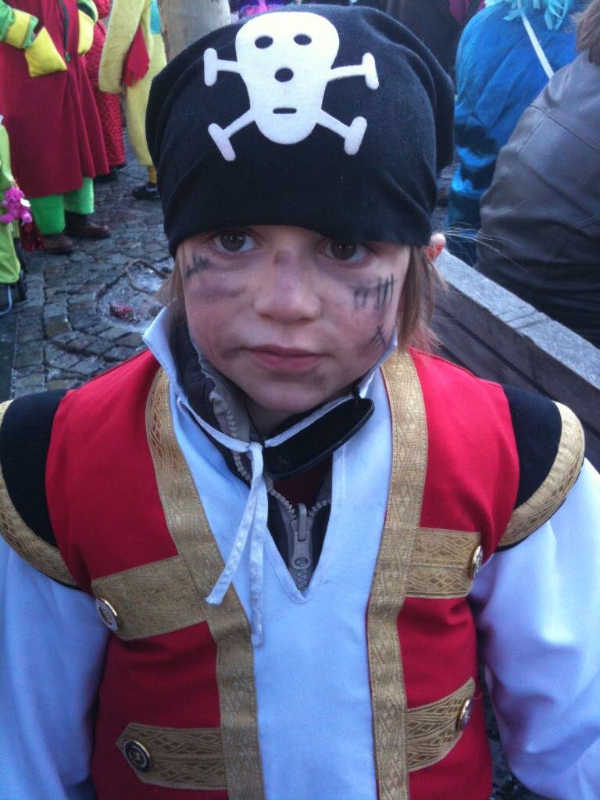

I was born in Maastricht but grew up in Veldwezelt, Belgium. My passion for design started early, at an art school that helped me with my creativity. I studied Creative Media Management at UCLL first, but halfway through I realized the program didn't match what I actually wanted. So I switched to Communication & Multimedia Design at Hogeschool Zuyd in 2024. The transition from Belgian to Dutch education was noticeable. Teachers here mentor you properly, not just lecture.
In 2025 two friends and I founded Naxon Studios. Our first project taught me how to actually work with a client and helped me understand the design process better. I work in Illustrator mostly, but right now I'm learning Photoshop because there are things I want to be able to do. I'm always trying to get faster and better at what I do. I want to keep working creatively, and eventually I'd like to start something for myself, whether that's expanding Naxon or something completely different. Sport keeps me grounded because sitting and designing all day is intense.
Right now I'm looking for a design internship where I can learn from people sharper than me and pull my weight on real work while I'm there. I'd love that to be at a studio that genuinely cares about craft — Barcelona is where I'm aiming, but the right place matters more to me than the pin on the map.
How I think
I start with research before I design anything, and I'll keep asking questions until I actually understand what I'm solving for. After that I build things and test them. When I'm in a team I prefer to focus on the design side while other people handle their part, because that's when I do my best work.
I spend a lot of time on the small things, sometimes more than I should, whether that's a few pixels of spacing, the weight of a line or the exact shade of a colour. It can work against me because I get caught up in it, but I'd rather finish something properly than leave it halfway.
I enjoy having something difficult to work on, even if the process itself isn't always fun, I'll be honest about that. But once it's done I'm glad I went through it, because I know I got better from it.
I care more about how I work than rushing to show something finished, and since I'm still a student there's plenty I'm figuring out along the way. I'd rather take the time to understand something properly than pretend I already have all the answers.
I don't ask questions just to ask them, but when something actually interests me I dig in properly, because I want to understand how it works before I start designing around it.
How I work
Languages